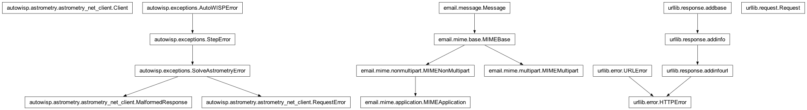
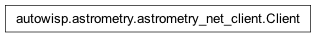

autowisp.astrometry.astrometry_net_client module
Class Inheritance Diagram

- class autowisp.astrometry.astrometry_net_client.Client(apiurl='https://nova.astrometry.net/api/')[source]
Bases:
object
- default_url = 'https://nova.astrometry.net/api/'
- exception autowisp.astrometry.astrometry_net_client.MalformedResponse(message: str, *, step_name: str | None = None, **kwargs)[source]
Bases:
SolveAstrometryErrorThe astrometry.net server returned an unparseable response.